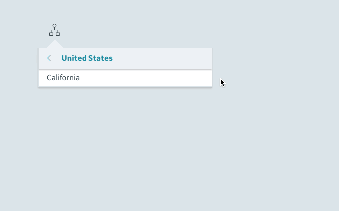
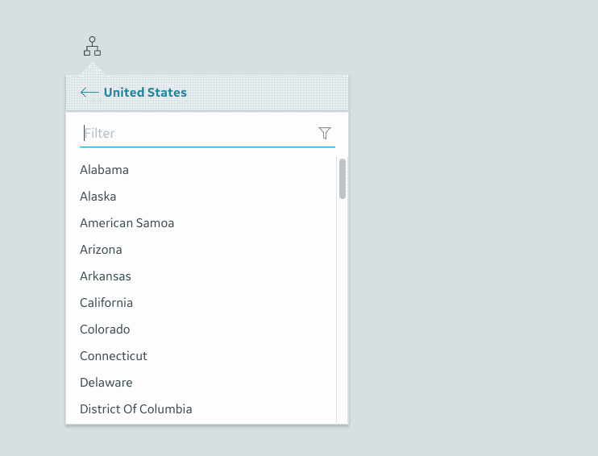
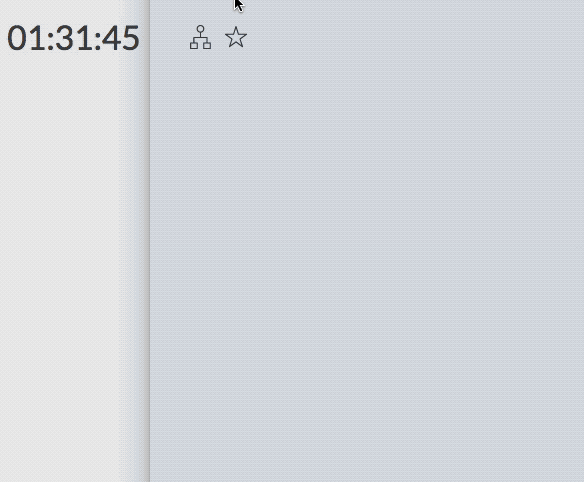
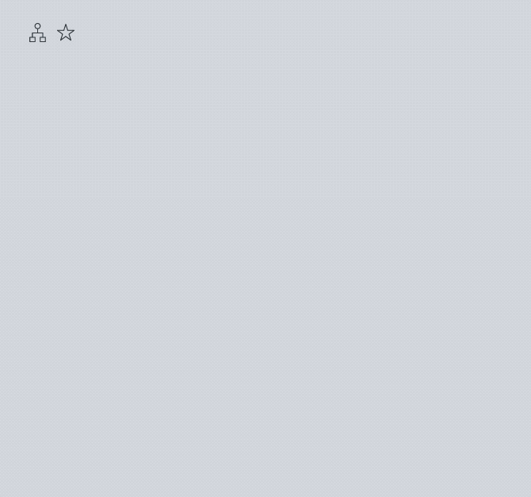

Developing with the context browser
The context browser allows the user to browse hierarchical data and select a specific item to set the context for their current view. Examples of possible hierarchical data include:
- locations organized by geography (e.g. Countries -> Cities -> Plants)
- physical assets organized by model or classification (e.g. Manufacturers -> Device classes -> Individual devices)
- employees organized by department or function (e.g. Divisions -> Teams -> Employees)
The user taps on an icon to open the context browser, which shows a panel with a list of context items. The user can navigate into an item to view its children, or they can select an item to choose a new context, which will update the current application view. When the user selects a new context, the context browser closes automatically.
An application can use the newly selected context to filter the data source for data visualizations, show items on a map, display relevant classification and device information, or to perform any other view updates. The application can store any relevant data associated with a context item and access that data when the user selects a new context.
Basic concepts
Use the context browser to visually represent a tree of items with hierarchical relationships, allowing users to browse and interact with those items. The data concepts underlying the context browser include:
- Items: A tree of context items. Each item is tagged with a user-friendly name displayed to the user (
label) and a unique identifier (id). Each item can have zero or more associated child items (children). Developers can also attach additional data to items and access it when the user selects a context. - Route: A list of unique ids representing a drill-down to a specific item in the hierarchy (e.g. "us", "calif", "san-francisco" to represent United States -> California -> San Francisco). The route can be bound to the URL to sync the selected item with the URL state (e.g. app.com/us/calif/san-francisco).
- Path: Similar to the route, but instead of a list of ids, the path contains a list of references to the actual item objects representing a drill-down in the hierarchy.
- Active: Refers to the item whose children the user is currently browsing. When the user taps on an item to navigate into it, the item becomes active. The user can then see the active item's children, and the context browser header shows the active item's label.
- Selected: Refers to the item the user has selected as their context. When the user taps on an item to select it, the context browser is closed and the application should update the view with the data for the newly selected item. The user can navigate through the context browser hierarchy (changing the active item) without necessarily changing the selected context.
Graphic: selected & active items
The context browser in the screenshot below navigates between assets in different cities. The user has browsed into “California” and selected “San Francisco” as their current context.
The graphic below shows the tree of items for this context browser, and the different data concepts that underlie its implementation.
Setup in your app
The user can open or close the context browser (px-context-browser) by tapping on the icon (px-context-browser-trigger sub-component). Opening the context browser shows a panel with a list of context items. Each item has a label and, on hover, reveals icons that the user can tap to select or activate the item (the second icon behavior can be configured).
Example
To start using the context browser in your app, you'll need to load the px-context-browser and px-context-browser-trigger components, bind the components together, and assign the context browser some items. The following CodePen shows a very basic context browser setup. Click the icon in the Result tab to open the context browser.
Let's break down the code in the CodePen above:
1. Import components: Start by importing both of the necessary components, px-context-browser/px-context-browser.html and px-context-browser/px-context-browser-trigger.html. Both components must be imported for the context browser to show up. You should change the import paths to point to your app's bower_components directory.
2. Set up dom-bind for binding (demo only): The dom-bind here is just to help with data-binding the px-context-browser-trigger's trigger property to the px-context-browser's openTrigger property. If you're building a Polymer-based app, these components will be inside a view dom-module which will handle the binding, and this dom-bind will no longer be needed. If you're building a non-Polymer app, you can use vanilla JavaScript or your framework's data-binding syntax to accomplish the same thing.
3. Create trigger: Create a px-context-browser-trigger tag wherever the context browser's open icon should show up. The trigger element creates a simple icon that shows and hides the context browser when tapped by the user.
4. Create context browser: Create a px-context-browser tag. Bind the trigger's trigger property to the context browser's openTrigger property. This will link the two together. Add some items for the user to browse through by setting the items attribute to some JSON. The items are added inline here via the items attribute, but could be added via data-binding or by settings the items property on the context browser using vanilla JavaScript.
Handle context selection
The context browser does what the name suggests: helps user browse and select contexts. When the user selects a new context, your application should respond by changing what's in the view to show information relevant to the currently selected context.
Binding to selected context
The context browser offers a few different ways for applications to listen for and react to the user selecting a new context. The simplest way is to data-bind to the px-context-browser selected property, which sends update notification events when a new item is selected. This can be accomplished with data-binding in a Polymer app view like this:
When the user selects a new context, the selected property will be updated and set to the object from the items array that corresponds to that context item. This will trigger data-binding in the Polymer app view that holds the context browser.
Binding with Angular, Vue, React
Apps developed using a JavaScript framework like Angular, Vue, or React can listen for the selected-changed DOM event on the context browser to handle context selection:
Angular (v2/v4)
Vue (v2)
React
Example
When the user selects a new context, your app should listen for a new selected context item and update itself. The following CodePen shows an example of a Polymer app view setting the context items, binding to the selected context item, and changing out data in the view when the selected context item changes:
Let's break down the code in the CodePen above:
0. Same setup as previous CodePen above: All the setup in the basic CodePen above is included here, including the importing of the px-context-browser components, binding an open trigger to the context browser, etc. See the CodePen example above for an introduction to these concepts.
1. Create sample Polymer app view: To simulate a real app binding to the context browser data, we add a sample-app-view component to the page and define it further down. This component wraps the px-context-browser component and some other behaviors in the same way a Polymer app view would.
2: Bind data to and from context browser: The openTrigger and items properties are bound down from the sample view into the context browser. The selected context is bound up from the context browser into the sample view as selectedContextItem. When the user selects a new item in the context browser, selectedContextItem is updated and set to the new item.
3. Show data from the selected context: The selectedContextItem is set to one of the objects defined in the context browser's items property. Each item has fields that the context browser uses for display: label, id, and children. The context browser will ignore any additional data stored in the item object, making it a convenient way to store static data about context items.
In the sample view's Properties section, some additional metadata is added to each item as data. Each context item represents a location in the United States - the metadata includes the population and area (size) of the context item. Data-bind those values here to display them to the user.
4. Set context items to pass to the browser: Define some items to pass to the context browser and add the population and area metadata to each item. See the keys property for a list of reserved keys that should not be used for metadata. These keys can be changed. Any unreserved key can be used to store data about a context item.
Other ways to fetch data when context changes
Not all types of data should be stored directly on context items. Very large datasets (e.g. timeseries data with thousands of points) should be stored in a different place in memory, or loaded on demand from a backend server. To fetch data from a server when a new context is selected, watch for changes to the px-context-browser selected property and trigger some code to fetch new data based on the item that was selected.
Show icons, filter
The context browser's visual and interaction styles can also be customized to fit the needs of different apps. Two commonly used configurations are:
- showing additional icons to users when they hover over context items
- showing a search input that allows users to filter the visible items
Select item icon
What it is: The 'select item' icon appears when the user hovers over a context item that can be selected. Tapping on the icon selects the item, and updates the current context through the selected property (see "Handle user context selection" section above).
How to enable it: This icon is enabled by default. It doesn't require any special configurations.
Marking items that can't be selected: Some items can't be selected. These items are generally "containers" or parents that hold some child items, but that do not have any relevant data the user can explore. Items that can't be selected will not show the 'select item' icon on hover. Set the isSelectable key to false on items that can't be selected when you define them in items. See the "Items data structure" section below for more information.
View children icon
What it is: The 'view children' icon appears when the user hovers over a context item that has children or can have children. Tapping the icon activates the item, opening it so the user can view its children. Tapping the icon does not select the item or change the current context. With or without the children icon, tapping anywhere in the context item except the select icon will perform the same action, activating an item and displaying its children if applicable.
How to enable it: This icon is hidden by default. To show it, set the px-context-browser show-arrow attribute. Example:
Marking items that can't have children: Some items can't have children and can't be activated. These are usually the lowest-level items in your data model and can only be selected. Set the isTerminal key to true on items that can't have children when you define them in items. See the "Items data structure" section below for more information.
Filter input
What it is: The filter appears as a search input at the top of each column in the context browser. The user can filter through the visible items by typing in the search input. Any items with labels that don't match the user's search are hidden. This is useful when some context items have a large number of children (e.g. 25+).
How to enable it: The filter is disabled by default. To show it, set the px-context-browser show-filter attribute. Example:
Set the filter/read the filter: The filter property will be set to the user's search string when the user enters text in the filter search box, and fires notification events upon changing. To set the filter dynamically from your app, set the context browser filter property to a new string. To clear it, set the filter property to an empty string or null.
Example
The following CodePen shows the context browser configured to use the view children icon and the filter:
Format context data
The px-context-browser data model is centered around a tree of context items set as the items property. items is structured as an array of objects with some required keys and values that are used by the context browser to display each item to the user. Items may have nested sub-items called children.
Use the following attribute to set the context browser items:
items: Array- An array of objects that are used to populate the context browser UI.
Each item should have at least the following properties:
id: string- A unique string that identifies the item. This string should only contain valid ASCII characters. It's recommended to only use URI-safe characters to allow for easy binding to the URL. Examples: 'home' or 'alerts'.label: string- A short, user-friendly text label for the item.
The following optional properties can also be set:
children: Array- An array of sub-item objects that are children of the item. Each child item should also have an id and label, and may have its own child items.isTerminal: boolean = false- If true, the item can never have children. If false, the item can, but does not necessarily, have children.isSelectable: boolean = true- If true, the item can be selected. If false, the item can't be selected, but it can be a parent.isExhausted: boolean = false- If true, there are no more children to load for the item. If false, there are still children to load (see "Lazy loading children" below for more info).
The following is an example of a list of valid context items:
Convert your data model
Many applications that will use the context browser have their own unique data model. The context browser API is designed to be flexible and suit different data models. To accomplish this, the context browser can be configured to read different keys in each of the items objects to find the information it needs.
However, the context browser does have some requirements (e.g. a tree of nested items) that can't be changed. If your app uses a data model that doesn't meet these requirements, you will have to convert your data to use it in the context browser. This conversion can be done on the server before the data is sent to the client, or on the client in your app code before the items are set in the context browser.
Before starting a data model conversion, take the time to understand the basic concepts of the context browser and its data model (reading this guide is a good start!). Compare it with your app data model and come up with a list of ways the two differ. Then, if necessary, decide how and where to convert your data to work with the context browser.
Changing the items keys:
Some data models may use different keys to define information about each context item. For example, this context item defines its user-friendly name as asset_name, and its unique identifier as asset_id:
This data doesn't need to be manipulated to work in the context browser. The developer can set the keys attribute on the context browser to change the keys the context browser reads for each item. The id, label, and children keys can all be changed using this attribute:
keys: ObjectChanges the item properties (keys) that will be used internally to find each item's unique ID, label, and child list. Use this property if you already have a predefined data schema for your application and want to customize this component to match your schema. Otherwise, it's recommended to leave the defaults.
The following properties can be set:
id: string = "id"- key to use for the unique ID of the itemlabel: string = "label"- key to use for the user-friendly label of the itemchildren: string = "children"- key to use for the array of child items
To use the uniquely formatted data shown above, set the context browser keys property:
If you want to configure any keys, you must set all the keys -- even keys that you do not want to change from their default value. If any of the keys are not defined, the context browser will fail.
Lazy load items
The context browser is designed to handle small and large trees of context items. While the context browser can handle very large trees (e.g. 20,000+ items with 12 levels of hierarchy), the limitation in displaying such a large amount of data is usually the long wait time required to request the data from a backend server. Preparing complex asset models on the server to send to the client may require many expensive computations to join different pieces of an asset tree together.
Apps loading a relatively small amount of asset data (i.e. <100 items) should probably just send the entire tree to the client in one request if the server can easily handle the request in less than ~200ms. Apps with a large set of data that can't be returned in a single response from the server, or that will take more than 250ms to send the data back, should load only part of the tree and load any additional data ad hoc as the user navigates the context browser.
Example: 4 regions, 10,000 trucks
For example, a trucking company with 10,000 trucks on the road that are grouped into a few regions should load just the top-level regions when the context browser is initialized. When the user navigates into a region to see its trucks, the app should load a subset of trucks that are in that region. If the user navigates away into another region, that region's trucks should be loaded, and so on. Once the trucks for a region are loaded they'll be available to the user instantly if they navigate away and return to view those trucks again.
Define item parent states
When context items are defined for the context browser, they may or may not have children. The following are all the different "parent states" for a context item:
- A context item can already have one or more children. When this context item is activated, its existing children will be displayed to the user. The app can load and add additional children to this context item at any time.
- A context item can not have children right now but can have children added at some point in the future. This item is "not exhausted." When this context item is activated, a blank panel will appear with a loading indicator and an event will be fired requesting the app add children. The app can load and add some or all of this item's children, clearing the loading indicator and showing those children in the context browser. The item's children can be loaded in batches of any size, and more can be added at any time.
- A context item can never have children. This item is "terminal". These items are generally at the bottom of the context tree and can't be drilled down into any further. The user can only select this item. There is no way to activate it and request its children.
- A context item can have children but never be selected. This item is "not selectable." These items are generally at the top of the context tree, and are only used to organize child items. These items usually do not have any data attached to them, and they can't be selected by the user as the current context. Tapping on this item will activate it and show its children, or will show a loading indicator if no children have been added.
These states aren't mutually exclusive. An item can be in one or more of these states, and can move between these states over time. A few states can't be combined: an item can't be marked as terminal (never have children) and also be marked as not selectable. The user would have no way to interact with this item.
Applications can mark context items with these states to tell the context browser how to display them to the user, and to change the way the context browser interprets user interaction with these items. When the px-context-browser items are first defined, the following keys can be set on an item:
children: Array- An array of sub-item objects that are children of the item. Each child item should also have an id and label, and may have its own child items.isTerminal: boolean = false- If true, the item can never have children. Tapping a terminal item selects it. If false, the item can have children, but may not have any right now. Items are not terminal by default.isExhausted: boolean = false- If true, there are no more children to load for the item. If false, the item may still have some children available to be loaded from the server.isSelectable: boolean = true- If true, the item can be selected. If false, the item can't be selected, but it can be a parent that displays children when the user navigates to it. Items are selectable by default.
Lazy loading APIs
The following px-context-browser attributes can be used to implement lazy loading:
loading: boolean = false (read only)- When the user activates an item with no children, an empty panel with a loading indicator is shown while the app requests and returns more children. This attribute will be set to true while the context browser waits for children to be added and notify the app with aloading-changedevent.loadingTimeout: number = 5000- Set this attribute to change the amount of time the context browser will wait for children before clearing the loading view and returning the user back to the last visible parent. The time is set in milliseconds and defaults to 5 seconds.
The following events are fired to help with lazy loading:
px-app-asset-children-requested- Fired when the user activates an item in the context browser that is not exhausted. Theevent.detail.itemwill contain a reference to the item the app should load and add children for. After the children are loaded, the app can call theaddChildrenmethod with theevent.detail.itemreference and the new children to update the context browser.
The following methods can be used to implement lazy loading:
addChildren(node: Object, children: Object|Array<Object>, options: Object)- Adds a child or children to the context item (node). Pass a single object to add one child, or an array of objects to add multiple children. The node should be a direct reference to one of the objects already in the asset graph (e.g. one of theitemsobjects or another node added through theaddChildrenAPI). To add children to the root of the graph, call withnodeas null.removeChildren(node: Object, children: Object|Array<Object>, options: Object): Removes a child or children from the requested node. Pass a single object to add one child, or an array of objects to add multiple children. The node should be a direct reference to one of the objects already in the asset graph (e.g. one of theitemsobjects or another node added through theaddChildrenAPI). To remove children from the root of the graph, call withnodeas null.cancelLoading(): Cancels the current child loading event, if one is in progress. Changes the active browser view to the parent of the item that was previously loading.
Example: implement lazy loading
When the user activates an item that can have children but doesn't have any defined yet, the context browser will show an empty panel with a loading indicator. The context browser element fires a px-app-asset-children-requested event when the user navigates into an item that isn't marked as exhausted. The app can listen for the children requested event to determine which item to get the children for, and make a request to the backend server to get those children. When the request is finished, the app should add any new children to context browser using the addChildren method:
The following CodePen shows this all working together:
Favorites
The Favorited Panel allows a user to save a subset of the items in their context hierarchy as "favorites" so they can more quickly and easily access those items.
Enabling favoriting
Follow the same basic setup as in the "Setup in your app" section above:
1. Import components
2. Set up dom-bind for binding (demo only)
3. Create open trigger and favorited trigger: Create two px-context-browser-trigger tags wherever the context browser's Open and Favorited trigger icons should show up. The trigger element creates a simple icon that shows and hides the context browser or favorites menu when tapped by the user.
4. Create context browser: Create a px-context-browser tag. Bind the first trigger's trigger property to the context browser's open-trigger property, and bind the second trigger's trigger property to the context browser's favorited-trigger property. This will link the context browser to the two triggers. You must also set the favorited attribute on the Favorited trigger. Finally, add items to the context browser as described in the example above.
Favoriting APIs
The following px-context-browser attributes must be set to enable favoriting:
show-favorited: boolean = false- If true, the user can favorite items in the context hierarchy and access those items from a separate Favorited Panel. If false, the user cannot use the favoriting feature of the context browser.
The following px-context-browser attributes are available to help with favoriting, but are not required:
favoritedSyncFailed: boolean: false- If true, a contextual notification will be displayed at the top of the Favorited Panel to inform the user that their locally favorited items have not been saved to their server. If false, the notification will be hidden.favoritedSyncing: boolean = false- If true, a loading indicator will be shown to indicate that the app is attempting to resync locally favorited items with those saved on the server. If false, the loading indicator will be hidden.
The following px-context-browser-trigger attributes must be set to enable favoriting:
favorited: boolean = false- If true, the corresponding trigger will open the Favorited Panel rather than the regular context browser. NOTE: This property should be set on the px-context-browser-trigger, not on the context browser itself.
The following events are fired to help with favoriting and de-favoriting:
px-app-asset-favorited- Fired when a new item is favorited. Includes details about how the item was favorited, and information about the new favorited item.px-app-asset-defavorited- Fired when a previously favorited item is de-favorited. Includes details about how the item was de-favorited, and information about the de-favorited item.px-app-asset-favorited-sync-requested- Fired when the user manually re-syncs their local favorites with those stored on their server.
The following methods can be used to favorite and de-favorite items:
favorite(item: Object|Array<Object>, source: String)- Call with an object that is a direct reference to one of theitemsobjects to favorite a single item, or with an array of objects to favorite multiple items.defavorite(item: Object|Array<Object>|null, source: String)- De-favorites one or more items. Call with a direct reference to one of the favorited items to de-favorite it, or an array of favorited items to de-favorite multiple, ornullto de-favorite all items.
The app can also use px-context-browser's favorited property to both get the user's current favorites and to set the user's favorites, e.g. after loading them from the server.
Favoriting and selecting favorited items
When the user hovers over an item in the context browser and favoriting is enabled, they will be presented with a star icon they can tap to add that item to their list of favorites. To de-favorite an item, the user can tap the star icon again.
To see all favorited items, the user can open the favorites menu by tapping the favorites trigger. This will open the user's list of favorites, from which they can de-favorite an item or select it to open its context.
Selecting an item from the Favorited Panel works the same as selecting an item from the regular context browser: clicking on an item will open that item's context, and the user will see a visual indication of the currently selected item when they re-open either the Favorited Panel or the regular context browser.
De-favoriting items
The user can de-favorite an item from the favorited list by clicking on the star icon. De-favoriting an item will remove it from the favorited list, but the de-favoriting will not be reflected in the list until the user either closes the Favorited Panel for more than 5 seconds, or opens the regular Context Browser panel. In the interim, the item will remain in the favorited list, but the star icon indicating that it is favorited will not be filled in. Having a 5 second delay before an item is de-favorited allows the user to reopen the Favorited Panel and still see the item in the list (and re-favorite it) if the de-favoriting was done in error. De-favoriting an item from the Favorited Panel will be reflected in the Context Browser as well. These scenarios are demonstrated in the gifs below.
Scenario 1: Defavorite an item from the Favorited Panel, close the panel, and immediately reopen it. The item will still appear in your favorites list.
Scenario 2: Defavorite an item from the Favorited Panel, close the panel, and wait 5 seconds before reopening it. The item will no longer be in your favorites list.
Scenario 3: Defavorite an item from the Favorited Panel, open the main Context Browser panel, and reopen the Favorited Panel. The item will no longer be in your favorites list.
Example: favoriting an item when there are connection issues
It is the responsibility of the app developer to sync the user's favorites to the server and load them when the user first loads the app.
If a user tries to favorite or de-favorite an item while experiencing connectivity issues, the action will be reflected in the Favorited Panel, but it may not be saved to the user's server or database. It is up to the developer to inform the user if this is the case by setting the favoritedSyncFailed property on the context browser. The user will then be informed through a contextual notification at the top of the Favorited Panel that the action has not taken place. The contextual notification will provide an action to attempt to re-sync the list. Clicking on the re-sync icon will fire the px-app-asset-favorited-sync-requested event. The developer should listen for this event and then dismiss the contextual notification while attempting to re-sync the favorites. The developer can also set the favoritedSyncing property on the context browser while attempting to sync favorites in order to give the user a visual indication of what is happening.
The following Glitch shows this all working together:
Other features
Timeout after closing
If the user opens the context browser, navigates to a different place in the context hierarchy, and closes the browser panel without selecting anything, the context browser will reset their active view after 5 seconds. The next time the user opens the context browser, the selected context item will be visible, or the root will be visible if no context item is selected. If the user re-opens the context browser before the 5 seconds is up, their active view will not be reset.
Pre-select a context
A context item can be pre-selected when the context browser is first loaded using the selected-route attribute. The selected route provides an additional way for apps to listen for context changes and to update the selected context from outside the browser. (See the "Handle user context selection" section above for the other approach to this using the selected attribute.)
The selected route attribute represents a path through the tree:
selectedRoute: Array- The route to the selected item as an array of strings. Use this property to set the selected item by route, or to bind to updates when the selected item is changed. Changing this property will automatically update the selected item.
The route array starts at the top of the graph and ends with the selected item. Each piece of the route is a string that corresponds to the unique ID of a context item.
For example, given the following graph:
To select the "Truck Statuses" page, set the selected route attribute to:
If the user then selects the "Generator Alerts" item, the route array would be updated to the following: